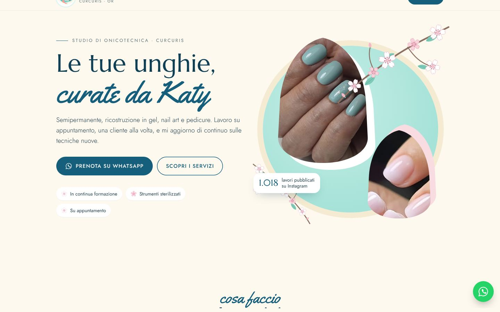
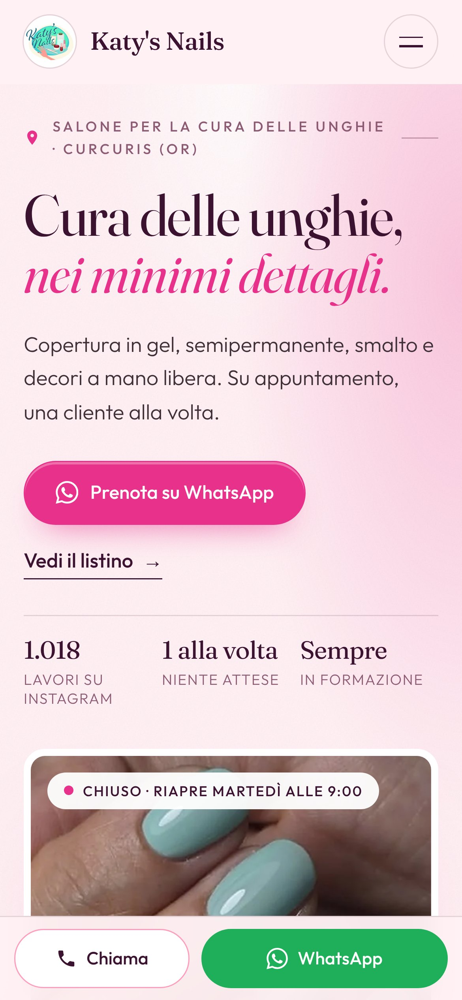
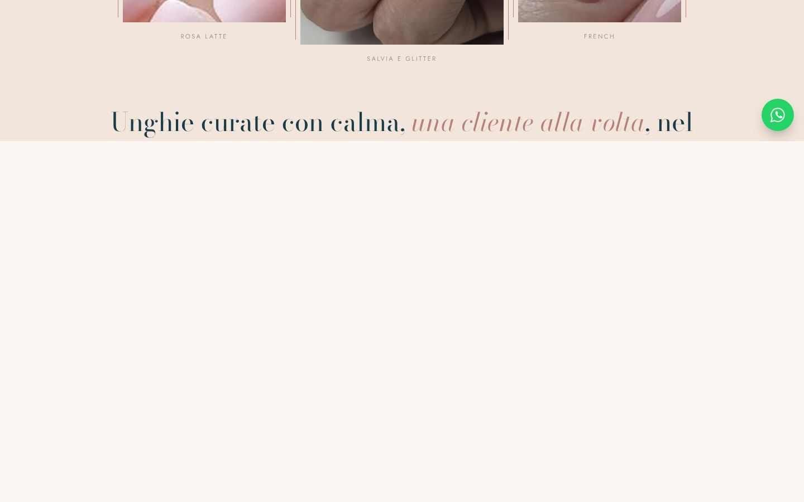
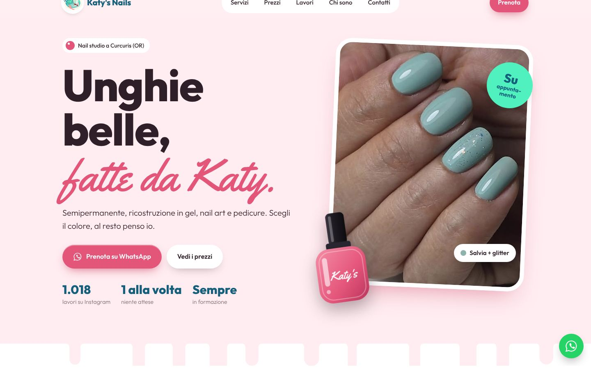

Bozza AAcqua e fiori
La più vicina al profilo di oggi: l'acquamarina del logo e i fiori delle copertine delle storie in evidenza. Le foto stanno dentro cornici a forma di unghia. Fresca, femminile e luminosa.

Versione scelta e aggiornataApri il sito nuovo →Bozza C rifatta con il listino vero di Katy, la grafica da telefono sistemata e il pannello di gestione. Qui vedi un'anteprima: il pannello funziona solo quando il sito è online.Tre stili da nail studio, tutti con il logo, le foto del profilo e i dati veri dello studio di Curcuris. È stata scelta la C.

La più vicina al profilo di oggi: l'acquamarina del logo e i fiori delle copertine delle storie in evidenza. Le foto stanno dentro cornici a forma di unghia. Fresca, femminile e luminosa.

Il salone di bellezza classico: avorio, nude e rosa antico, caratteri eleganti, foto ad arco, servizi raccontati uno per uno e un listino come il menu di una spa.

Più giovane e vivace: rosa fragola, una boccetta di smalto lucida con il suo nome, colate di smalto tra le sezioni e un nastro con i servizi che scorre.
Cosa è vero e cosa no. Nome, logo, indirizzo, telefono, Instagram e foto vengono dal profilo. Prezzi, orari, P.IVA, link Facebook e due righe su Katy sono segnaposto: nelle bozze sono sottolineati con un tratteggio giallo. Le foto sono ritagli dello screenshot: con gli originali le bozze migliorano molto.